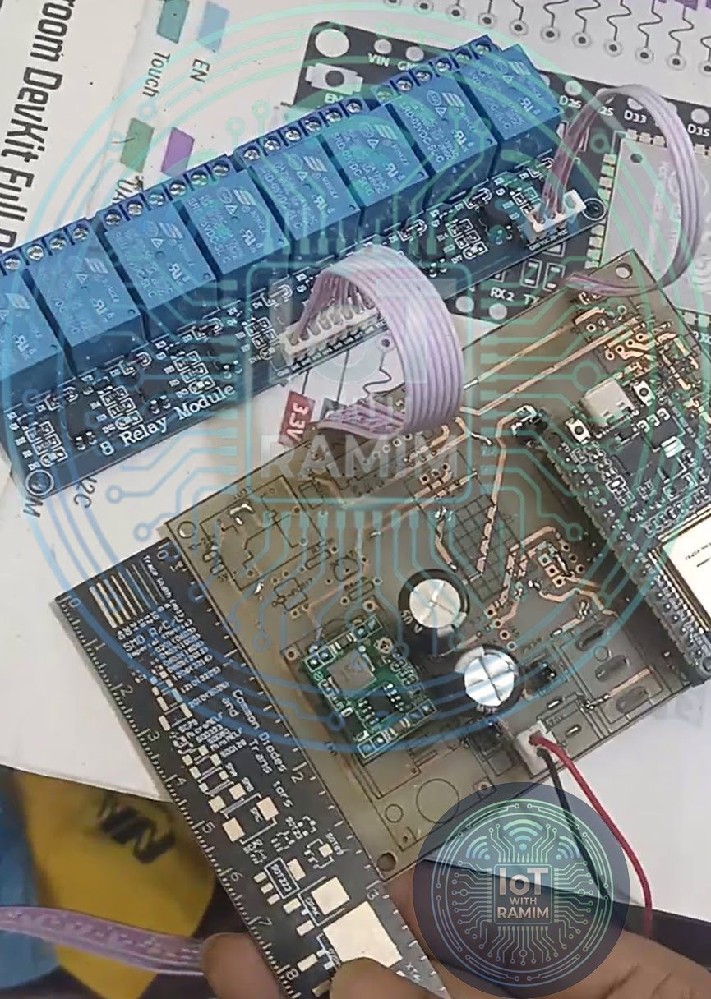
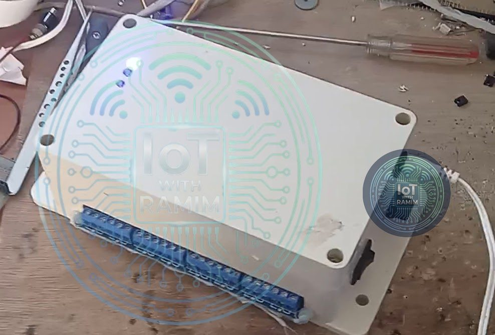

Aquaculture
NFN Switching Unit (SW)
The "hands" of the Smart Aquaculture Ecosystem. While the sensor unit gathers data, the NFN Switching Unit acts on it: a cloud-connected, 8-channel actuator that automates paddle-wheel and air-pump aerators, automatic feeders and water management.
- Client
- Nexus Fish Network (NFN)
- Role
- Lead R&D Engineer (IoT & Hardware)
- Type
- Industrial automation hub / IoT actuator
- ESP32
- 8-channel relay
- MQTT
- Wi-Fi
- DHT22
- OTA updates
- 12 V DC
Overview
The NFN Switching Unit replaces manual switchboards on the farm. It turns the ecosystem's algorithmic decisions into physical actions on high-load equipment: paddle-wheel aerators, air-pump and diffuser aerators, automatic feeders and water-management pumps. The result is lower energy consumption and a fast response to critical water-quality events.
It works alongside the NFN-SEN sensor unit as part of the Smart Aquaculture Ecosystem.
Hardware architecture
The unit is built for the harsh electrical environment of agricultural sites while keeping precise digital control.
- Microcontroller: dual-core ESP32 running the Wi-Fi and MQTT stacks and the control logic.
- Actuation: an 8-channel relay module that switches AC loads, so a single unit can manage several aerators and feeders at once.
- Power: a stable 12 V 2 A DC adapter that supplies enough current for simultaneous relay-coil activation without voltage sag.
- Connectivity: MQTT over Wi-Fi, triggering devices from the cloud in under 200 ms.
- 8relay channels per unit
- <200 mscloud-to-relay triggering
- 12 V 2 ADC supply


Operational logic: AI-driven automation
Instead of running on fixed timers, the SW unit follows dynamic logic driven by data from the ecosystem's sensor nodes.
Scenario 1: oxygen automation (energy saving)
- The SEN unit detects dissolved oxygen (DO) falling below a critical threshold, for example 4 mg/L.
- The server analyses the water dynamics and sends a command to the SW unit.
- The SW unit switches on the aerator relays immediately, and switches them off once DO has normalised, avoiding wasted energy.
Scenario 2: precision feeding
- The cloud schedule or an AI growth model determines the best feeding times.
- The SW unit runs the feeder motors for precise durations, minimising feed waste and water pollution.
Scenario 3: smart water-level maintenance (inlet control)
- The ultrasonic water-level sensor on the SEN unit detects that the pond level has dropped below the preset threshold, for example through evaporation or seepage.
- The server verifies the reading and sends a "refill" command over MQTT.
- The SW unit switches on the inlet pump and fills the pond until the target level is reached, preventing water stress on the fish.
Scenario 4: automated quality flush (outlet and inlet sync)
- The SEN unit reports critical levels of toxic ammonia (NH3) or high turbidity that aeration alone cannot fix.
- The AI logic starts a water-exchange protocol.
- Drain phase: the SW unit runs the outlet pump to discharge the dirty bottom layer of water.
- Refill phase: when the level reaches a safety limit, it stops the outlet pump and starts the inlet pump to bring in fresh water and restore balance.
These logic cycles are fully configurable from the mobile app, so farmers can set their own thresholds for pump activation.
Reliability and maintenance features
- Internal climate monitoring: as on the SEN unit, an onboard DHT22 continuously reports the temperature and humidity inside the control box, enabling proactive maintenance if the enclosure overheats or a seal fails.
- Unique device addressing: the firmware generates a unique ID from the ESP32's MAC address, so the server can address and control hundreds of SW units across a large farm without IP conflicts.
- Dynamic configuration (OTA): over-the-air firmware updates and remote reconfiguration through the MQTT API, with no physical access to the device needed.